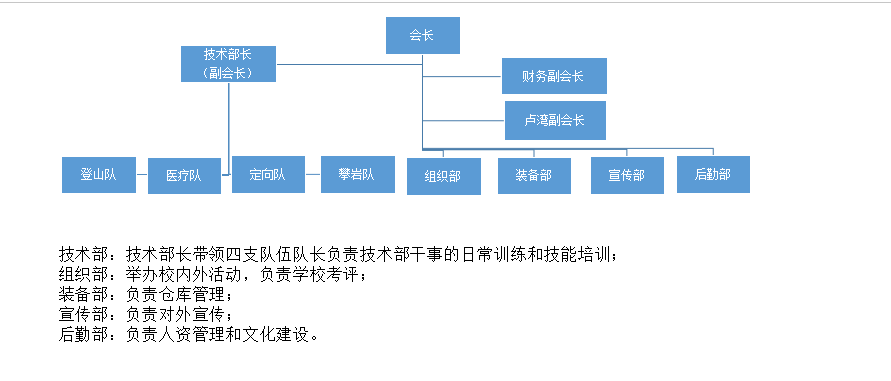

发信人: tankie(妇联主席恩~), 信区: outdoor
标 题: 协会现行组织架构
发信站: 饮水思源 (2014年04月14日20:14:34 星期一)
 screen.width - 200){this.width = screen.width - 200}">
要换届了，发上来供下一届参考。
对于下一届会长以及部长团成员，学校活动能力肯定比不上今年。关于一些细琐的行政和
管理工作我建议不要在现有的管理机制上进行改动，每一次改动就意味着至少两代人的重
新适应和自行开拓。宣传部和组织部都是比较嫩的部门。宣传部要坚守住协会过去在各个
平台（人人、BBS、微信、飞信、同去等）打拼下来的战地，一步一步推进，会使每一次活
动的宣传都事半功倍。组织部马上要成立第三年了，在会长层面上，组织部的成立帮助会
长减轻了太多的压力（zzm爽了一比= =），野协的活动也可以有一批擅长活动组织的干事
进行负责，但是对于协会来说，组织部还是以配合各支队伍举办有野协特色的活动为首要
，一年下来，联合攀登、定向比赛、攀岩比赛（如果学校场地可行了的话）、技能挑战赛
就够组织部忙的了。后勤部成立较久（不过据说也才三年？），不过每年的部门核心内容
都有变动，之后后勤应该坚持做好幕后工作，历年资料整理和内建，给他们部门搞个几T的
硬盘，烧烤架也归他们了，想来还是挺合适的。装备部历来为野协第一大部门，对于仓库
的管理，这一届做得很好，只是人才流失还是较为严重，希望每一个部长都能将干事视作
自己的弟弟妹妹，一个一个培养，一个一个好好对待，一个都不能少。
至于行政管理以外的技术工作，我相信下一届一定会比我做得更好，这个跟会长的属性有
关，但是一个合格负责的技术部长以及各个队长也非常重要，跟hm简单地商量了一下，技
术部长的人选可以由之前的技术为首要，改成有精力有想法去带各支队伍的训练，去带技
术培训的人，而技术层面可额外成立技术顾问团，作为培训的导师。似乎这样更为妥当。
各个部长的人选我希望能够竞争上岗的形式，而最终选上的都是有意愿有决心去为协会贡
献在任的这一年。也希望他们能把在协会当上部长（会长）当做终生的荣誉，一代代良性
循环下去。
至于hemin提到的野协理事会的问题，我倒是没有太在意。一般情况下会长不会犯什么重大
的错误，及时有一些错误，BBS这边也是能给到及时的反馈，看下一届会长想不想有吧。不
过有一点倒是，希望各个老人（我也很快就变成老人啦啦啦）提建议的时候能用友善点的
语气，你们在版上一些无意的话，会让下面看到的小朋友纠结一整天的。
呐！和谐水版，不要喷我...
--
喵呜~喵...喵喵~
喵！
喵喵喵~
喵喵！
※ 来源:·饮水思源 bbs.sjtu.edu.cn·[FROM: 59.78.7.106]
|